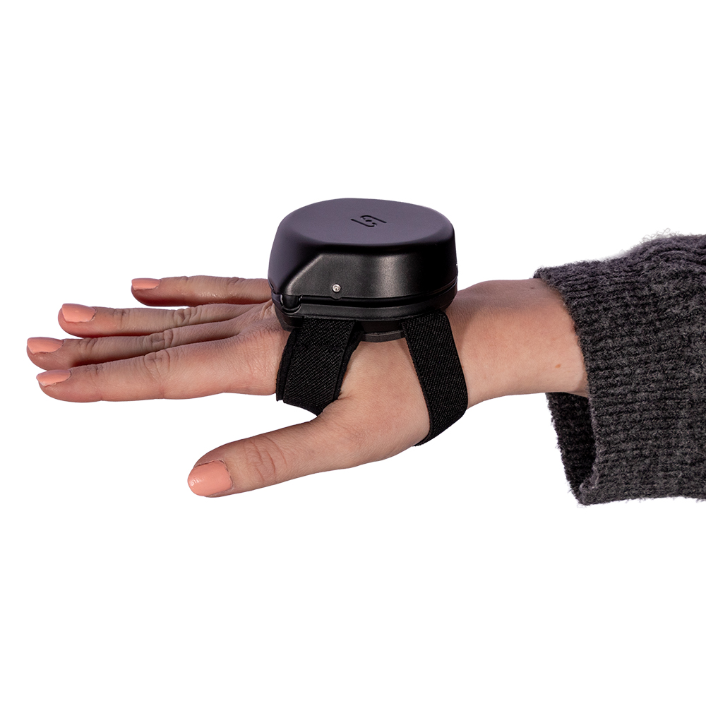
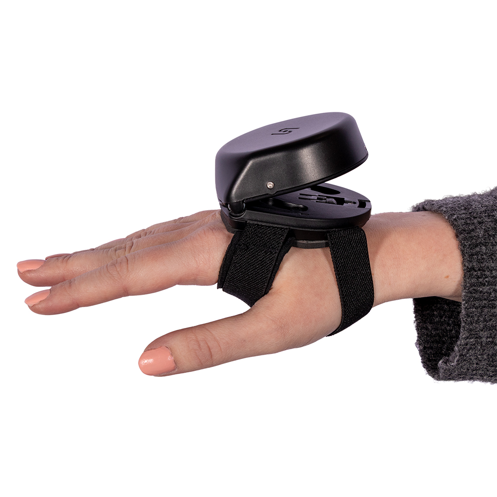
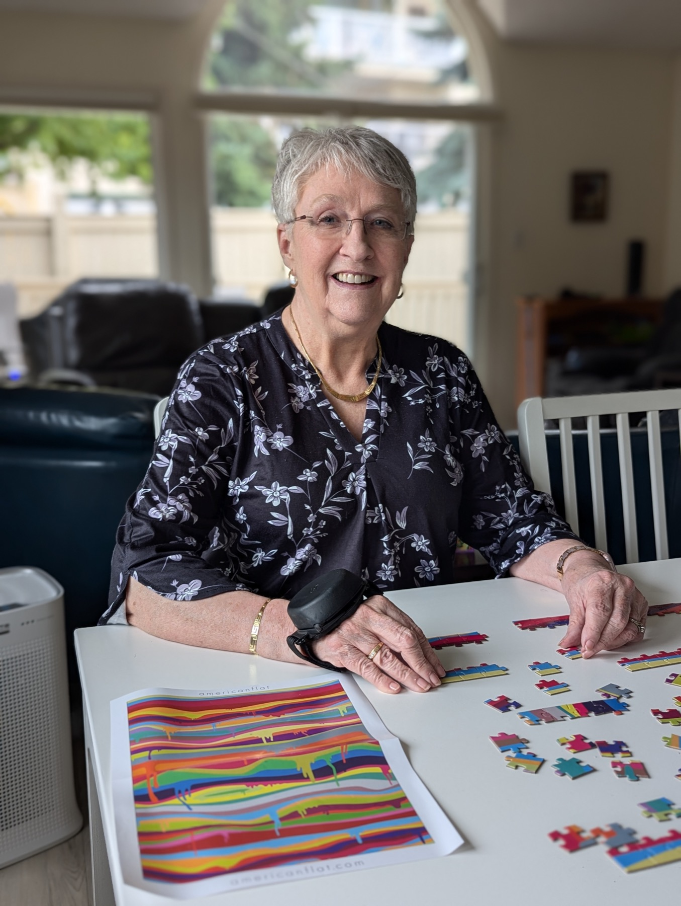

Tuned mass damper
The same principle that steadies buildings in an earthquake ù a disk moves opposite your tremor.
Steadi-3 Plus ù Product library

84% improved tremor control in controlled evaluations
Battery-free tremor stabilization ù explored as evidence, not a checkout.

The same principle that steadies buildings in an earthquake ù a disk moves opposite your tremor.
Calibrates to your frequency automatically. No charging. No batteries. All-day wear.
About 290 grams, replaceable straps, discreet enough for writing, eating, and work.

Real-world impact
Essential tremor and Parkinson's-related hand tremor ù eating, writing, drinking with greater control.
*Availability and terms vary by market and distributor.
Medical evidence supporting assistive tremor devices ù curated for clinicians, providers, and informed patients. Links below are placeholders for demo purposes.
Instruction materials and brochures from the Steadiwear asset library. PDF links are placeholders in this demo.
Answers for patients, caregivers, and healthcare providers evaluating assistive tremor technology.